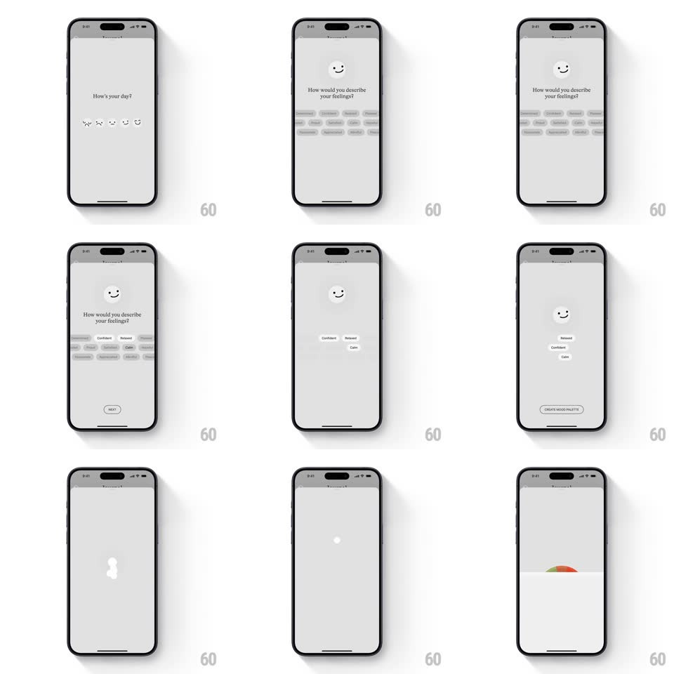

Media
Frame-by-frame

Rebuild this interaction 1:1: Lake's onboarding mood picker - "How's your day?" with a row of expressive smiley faces; picking one slides to "How would you describe your feelings?" with a tag cloud, then the selections collapse into stacked chips and a "CREATE MOOD PALETTE" button generates a custom palette that floods the screen.

Rebuild this interaction 1:1: Lake's onboarding mood picker - "How's your day?" with a row of expressive smiley faces; picking one slides to "How would you describe your feelings?" with a tag cloud, then the selections collapse into stacked chips and a "CREATE MOOD PALETTE" button generates a custom palette that floods the screen. ## Integration Integration: stack-agnostic spec - springs given as stiffness/damping, timed motions as duration + curve; map every value to your framework and animation library of choice. ## Scene Light-grey onboarding flow: screen 1 has the day's question and a row of five face icons (sad to happy, line-drawn with tiny features); screen 2 shows the chosen face enlarged above a grid of feeling tags (Relaxed, Confident, Calm...); final beat: the choices stack as chips, the button appears, and the screen fills with the generated palette. ## Motion spec Pattern: stepped picker with generative payoff. - Tap a face: it springs up and centers above the question (scale 1.6, spring ~340/22, 400ms) while the other faces fade out and the tag grid slides in from the right (spring ~360/26, 350ms). - Tap tags: selected tags fill dark (200ms) with a small pop (scale 1 -> 1.08 -> 1, 200ms); the Next button appears once at least one tag is chosen (fade + rise, 250ms). - Next: the face and chosen tags collapse into a centered vertical chip stack (each element flies to its stack slot, spring ~320/24, 400ms, 60ms stagger) and "CREATE MOOD PALETTE" rises in below. - Tap create: the chips scatter-fade, a brief loading pulse, then palette color bands sweep up the screen (bottom-up wipe, 500ms, staggered 60ms per band). ## Calibration - The chosen face persists as the constant element across screens - everything else rearranges around it. - The palette wipe is the payoff - full-bleed, no chrome visible during the sweep. ## Reduced motion Screens crossfade (250ms); palette fades in instead of wiping. ## Don't miss - The faces are minimal line smileys - tiny curved features, no emoji realism. - The tag grid keeps unselected tags as light outlined pills - only selection fills them.